Building a
Bullshit
Language

 #bullshitlanguage
#bullshitlanguage
AnnotationScript
Java annotations with a LISP
Demo time!
Jan Ouwens

 
 │ EqualsVerifier │ jqno.nl │
│ EqualsVerifier │ jqno.nl │  jqno
jqno
#bullshitlanguage
Climate for developers            
Read more at jqno.nl/climate
Weird projects

Weird project: Vim

Weird project: Astérix
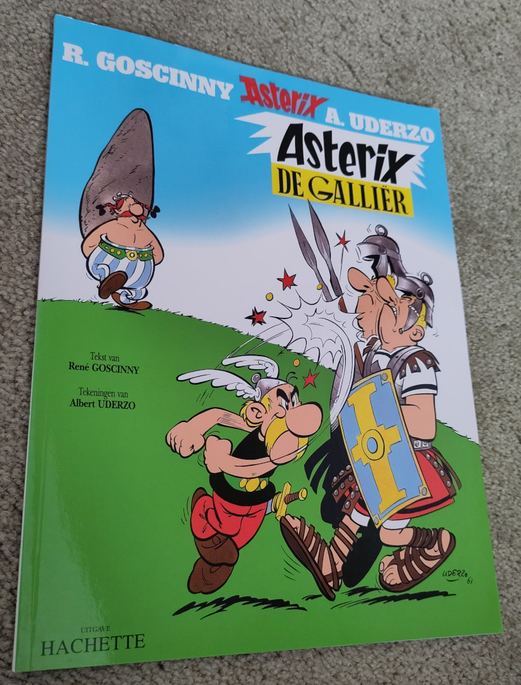
Weird project: Astérix
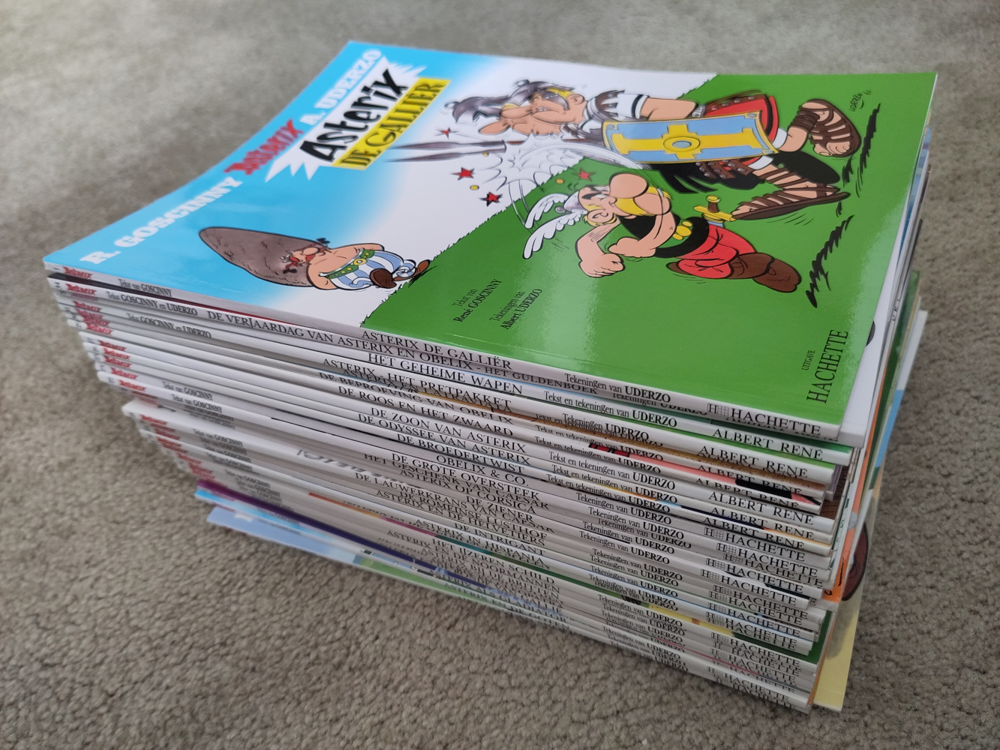
Weird project: Astérix
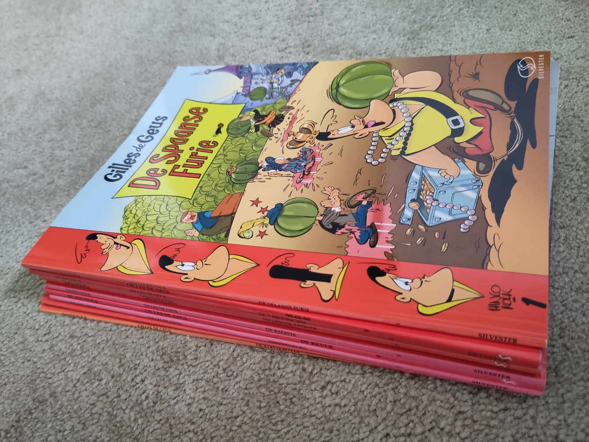
Weird project: Astérix

Weird project: Astérix
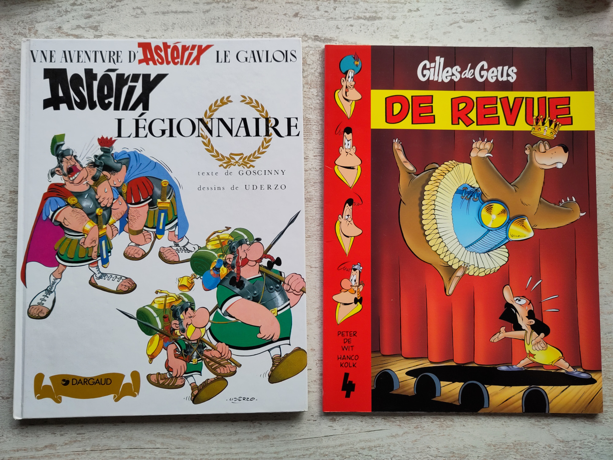
Weird project: Lego
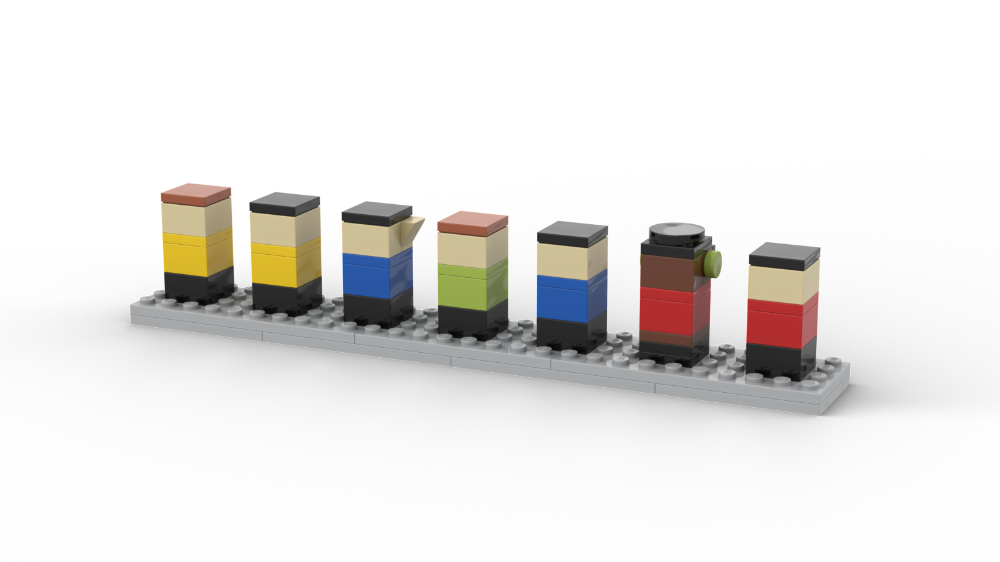
Weird project: Lego
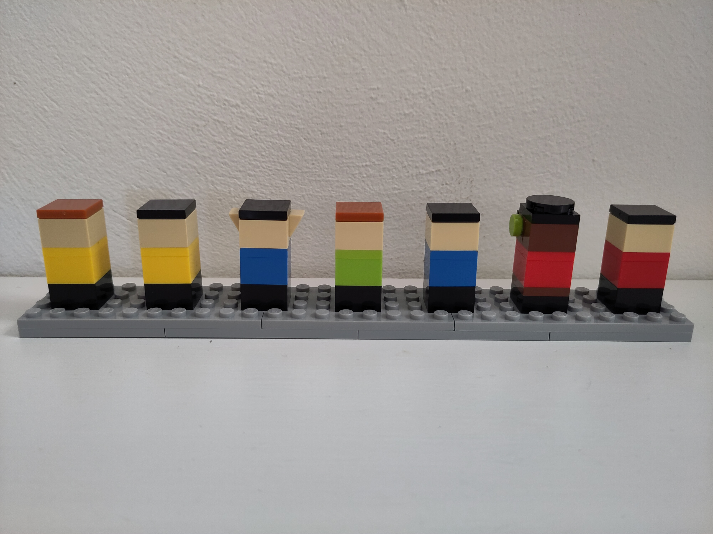
Weird project: Lego
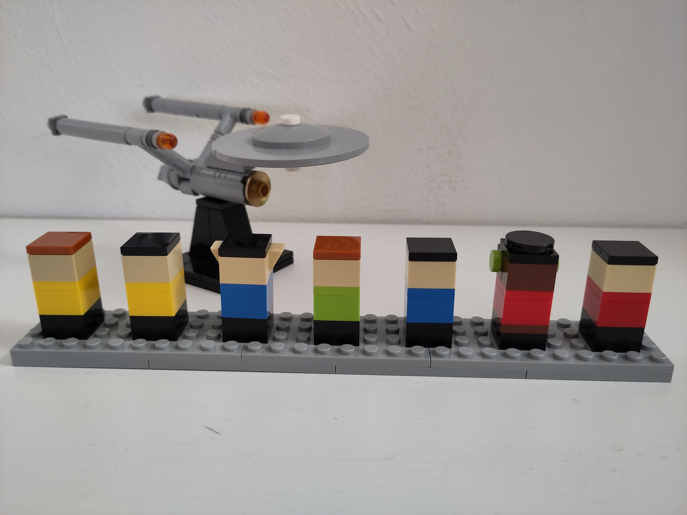
Weird project: Lego
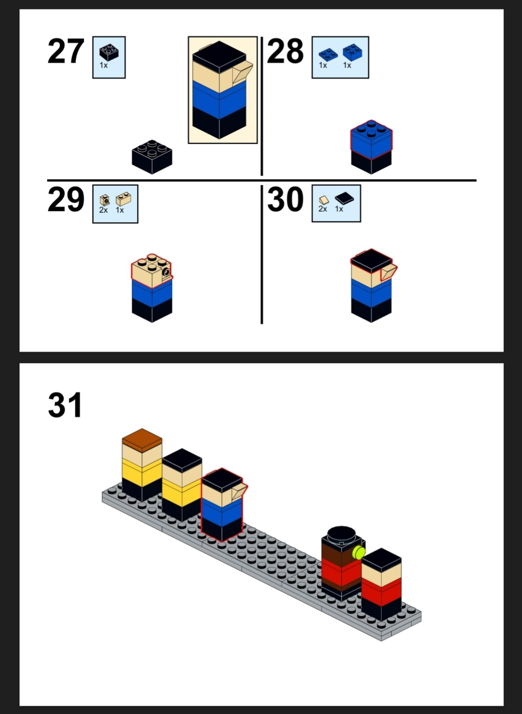
Weird project: Lego
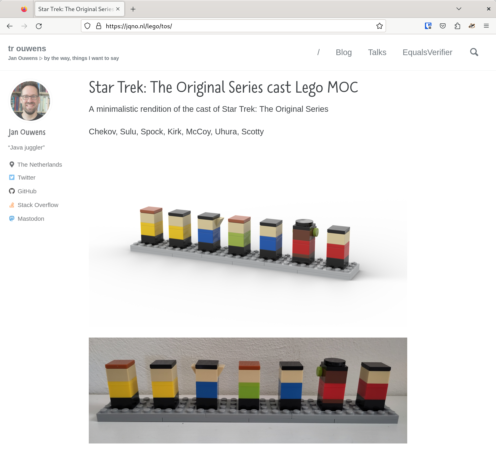
Weird project: Lego
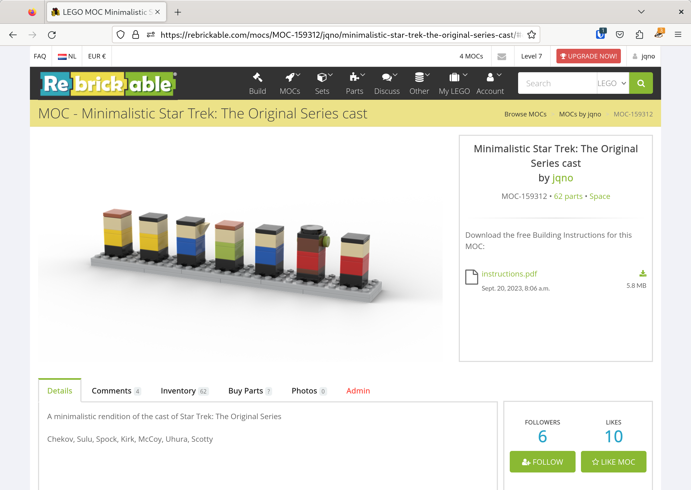
Weird project: Lego
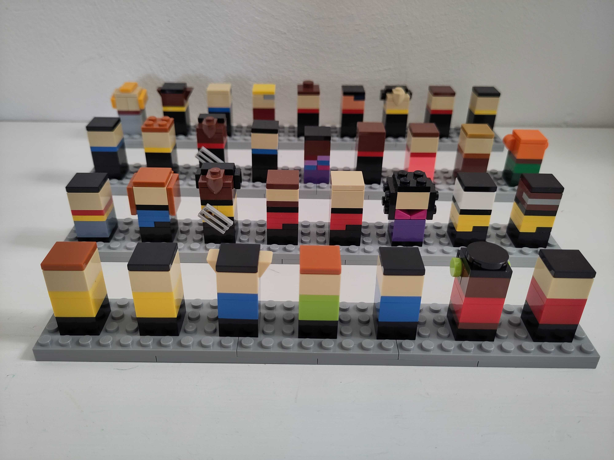
Weird project: Parallel Java

Weird project: Parallel Java

Weird project: Parallel Java

Weird project: Parallel Java

Weird project: Parallel Java

Weird project: AnnotationScript
Let’s do the opposite!
no annotations → only annotations
Weird project: AnnotationScript
The weirdest yet!
WHY!?
Why not?
WHY!?
@Autowired
@Bean
@Column(name = "wat")
@Deprecated
@JsonAlias("whynot")
@PostMapping("/endpoint/wtf")
@Test
public void waitwhat() {}WHY!?
WHY!?

WHY!?

WHY!?
I got excited with this one!
Also
No ChatGPT
Except for the final demo
AnnotationScript
is
a LISP
LISP
(LISP)
((LISP))
(((LISP)))
What’s a LISP?
- Common Lisp
- Scheme
- Emacs
- Racket
- Clojure
Syntax
(define (fizzbuzz x y)
(cond ((eq? (remainder x 15) 0) (display "FizzBuzz\n"))
((eq? (remainder x 3) 0) (display "Fizz\n"))
((eq? (remainder x 5) 0) (display "Buzz\n"))
(else (display x) (display "\n")))
(cond ((< x y) (fizzbuzz (+ x 1) y))
(else ())))
(fizzbuzz 1 100)Syntax
(+ x 10)Syntax
(+ x 10)
(+ x (* 2 5))The Power of LISP
(+ x 10)
(+ x (* 2 5))
((if #t + -) x 10)((Parentheses))
if (this.getId().equals(that.getId()))(if (= (getId this) (getId that)))Recursion
public int sum(int n) {
int result = 0;
for (int i = 0; i < n; i++) {
result += i;
}
return result;
}Recursion
public int sum(int n) {
if (n == 0) {
return 0;
}
else {
return n + sum(n - 1);
}
}Recursion
(define (sum n)
(cond ((eq? n 0) 0)
(else (+ n (sum (- n 1))))))Stack overflow

Stack overflow
java.lang.StackOverflowError
at java.base/java.util.Objects.hashCode(Objects.java:103)
at io.vavr.collection.HashArrayMappedTrieModule$AbstractNode.get(HashArrayMappedTrie.java:235)
at io.vavr.collection.HashMap.get(HashMap.java:615)
at nl.jqno.annotationscript.language.Environment.lookupOption(Environment.java:16)
at nl.jqno.annotationscript.language.Environment.lookup(Environment.java:20)
at nl.jqno.annotationscript.language.Evaluator.evaluateSymbol(Evaluator.java:53)
at nl.jqno.annotationscript.language.Evaluator.evaluate(Evaluator.java:21)
at nl.jqno.annotationscript.language.Evaluator.evaluateProc(Evaluator.java:117)
at nl.jqno.annotationscript.language.Evaluator.evaluate(Evaluator.java:45)
at nl.jqno.annotationscript.language.Evaluator.lambda$4(Evaluator.java:121)
at io.vavr.collection.Traversable.foldLeft(Traversable.java:493)
at nl.jqno.annotationscript.language.Evaluator.evaluateProc(Evaluator.java:120)
at nl.jqno.annotationscript.language.Evaluator.evaluate(Evaluator.java:45)
at nl.jqno.annotationscript.language.Evaluator.lambda$0(Evaluator.java:76)
at io.vavr.collection.Traversable.find(Traversable.java:458)
at nl.jqno.annotationscript.language.Evaluator.evaluateCond(Evaluator.java:76)
at nl.jqno.annotationscript.language.Evaluator.evaluate(Evaluator.java:33)Stack overflow
(sum 4)
(+ 4 (sum 3))
(+ 4 (+ 3 (sum 2)))
(+ 4 (+ 3 (+ 2 (sum 1))))
(+ 4 (+ 3 (+ 2 (+ 1 (sum 0)))))
(+ 4 (+ 3 (+ 2 (+ 1 0))))
(+ 4 (+ 3 (+ 2 1)))
(+ 4 (+ 3 3))
(+ 4 6)
10Tail call optimization
Let’s re-write
Tail call optimization
(define (sum n)
(cond ((eq? n 0) 0)
(else (+ n (sum (- n 1))))))↓
(define (sum n acc)
(cond ((eq? n 0) acc)
(else (sum (- n 1) (+ n acc)))))Tail call optimization
(sum 4)
(+ 4 (sum 3))
(+ 4 (+ 3 (sum 2)))
(+ 4 (+ 3 (+ 2 (sum 1))))
(+ 4 (+ 3 (+ 2 (+ 1 (sum 0)))))
(+ 4 (+ 3 (+ 2 (+ 1 0))))
(+ 4 (+ 3 (+ 2 1)))
(+ 4 (+ 3 3))
(+ 4 6)
10Tail call optimization
(sum 4 0)
(sum (- 4 1) (+ 4 0))
(sum 3 4)
(sum (- 3 1) (+ 3 4))
(sum 2 7)
(sum (- 2 1) (+ 2 7))
(sum 1 9)
(sum (- 1 1) (+ 1 9))
(sum 0 10)
10Recursion
What if…
Recursion
Y Combinator

Y Combinator
(define Y
(lambda (le)
((lambda (f) (f f))
(lambda (f)
(le (lambda (x) ((f f) x)))))))
Y Combinator
No reasonable person can understand this
But it works
Demo
Annotations
Why I don’t like them
Why I don’t like them
Checked at runtime
You have a nice, compiled, strongly-typed language underneath:
Why not use it!
Why I don’t like them
Weakly typed
@Autowired
@Bean
@Column(name = "wat")
@Deprecated
@JsonAlias("whynot")
@PostMapping("/endpoint/wtf")
@Test
public void waitwhat() {}Why I don’t like them
Stringly typed
@PreAuthorize("isFullyAuthenticated")@PreAuthorize("isFullyAuthenticated()")Why I don’t like them
Hard to discover
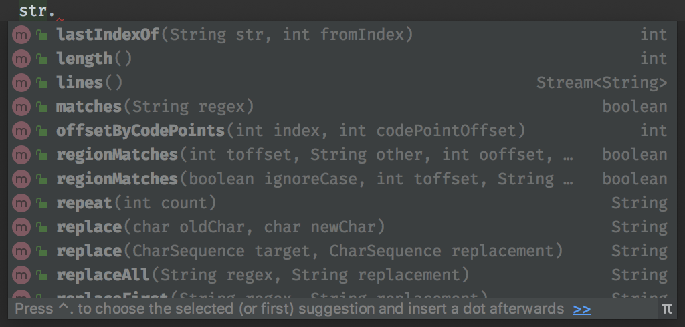
Why I don’t like them
Hard to debug
public @interface GetMapping {
/**
* Alias for {@link RequestMapping#name}.
*/
@AliasFor(annotation = RequestMapping.class)
String name() default "";
/**
* Alias for {@link RequestMapping#value}.
*/
@AliasFor(annotation = RequestMapping.class)
String[] value() default {};
// ...
}Why I don’t like them
Slow
List<Class<?>> allTheClasses = scanTheClasspath(); // üëà expensive!
for (Class<?> cls : allTheClasses) {
for (Annotation a : cls.getAnnotations()) {
Class<?> ann = a.getAnnotationType();
if (ann.getName().equals("SpringBootApplication")) {
// Start the container
}
}
}Anyway
Annotations, first try
@Parenthesis("if", @Parenthesis("<", "x", "0"), "'a'", "'b'")Annotations, first try

No nesting annotations!
Annotations, second try
@Open
@Symbol("if")
@Open@Symbol("<")@Symbol("x")@Symbol("0")@Close
@Symbol("'a'")
@Symbol("'b'")
@CloseAnnotations, second try
Sure! I’ll group them for you
 
 
Open[] opens = { @Open, @Open };
Symbol[] symbols = { @Symbol("if"), @Symbol("x"), @Symbol("0"),
@Symbol("'a'"), @Symbol("'b'") };
Close[] closes = { @Close, @Close };Annotations, third try
public @interface Syntax {} // üëàüèª smart-ass!
public @interface Open extends Syntax {}
public @interface Symbol extends Syntax {}
public @interface Close extends Syntax {}
Syntax[] code = { @Open, @Symbol("if"), @Open, @Symbol("<"),
@Symbol("x"), @Symbol("0"), @Close, @Symbol("'a'"),
@Symbol("'b'"), @Close };Annotations, third try
No extending annotations!
Annotations, fourth and final try
@Zero("if")
@Zero(list={@One("<"), @One("x"), @One("0")})
@Zero("'a'")
@Zero("'b'")Annotations, fourth and final try
I see no issue with that!
Make as many as you like!
ü•±
@Zero to @Eleven
Map to AnnotationScript
(if (< x 0) "a" "b")
Map to AnnotationScript
(
if
(
<
x
0)
"a"
"b"
)Map to AnnotationScript
(
if
(
<
x
0 )
"a"
"b"
)Map to AnnotationScript
@Zero("if")
@Zero(list={
@One("<"),
@One("x"),
@One("0")})
@Zero("'a'")
@Zero("'b'")
public static class First {}Implementation
Implementing LISP
 
Implementing LISP
Using Peter Norvig’s blog post:
Architecture

Architecture

Tokenizer

Tokenizer
@Zero("if")
@Zero(list={
@One("<"),
@One("x"),
@One("0")
})
@Zero("'a'")
@Zero("'b'")Tokenizer
@Zero("if") // 'if'
@Zero(list={ // '('
@One("<"), // '<'
@One("x"), // 'x'
@One("0") // '0'
}) // ')'
@Zero("'a'") // 'a'
@Zero("'b'") // 'b'DONE! ü•≥
Architecture
Parser

Parser
- Atoms (
0,'a') remain the same - Symbols (
define,if,<) are wrapped inSymbolclass (starts a sub-list)ends a sub-list
List<Object> ast = List.of(
Symbol("if"),
List.of(Symbol("<"), Symbol("x"), 0),
"a",
"b");Architecture
Environment

Environment
(define x 10)Environment

(define x 10)Architecture
Evaluator

Evaluator
Is it an Atom?0, 'a'
↓
Return it
Evaluator
Is it a Symbol?if, <
↓
Look up in Environment
Return it
Evaluator
Is it a List?(< x 0)
↓
Evaluate all elements
Call function
Return result
Tail call optimization
Evaluator works recursively
stack overflow after ~60
Tail call optimization
Use Peter Norvig’s second blog post:
Tail call optimization
- Add mutability
- Evaluate procedure calls in-place
Tail call optimization
Instead of this:
public Object evaluate(Object expression) {
// ...
if (isAtom(expression)) {
return evaluateAtom(expression);
}
if (isProc(expression)) {
var evaluated = evaluateProc(expression);
return evaluate(evaluated); // üëà recursive call
}
}Tail call optimization
We do this:
public Object evaluate(Object expression) {
var exp = expression;
while (true) {
// ...
if (isAtom(expression)) {
return evaluateAtom(expression);
}
if (isProc(expression)) {
exp = evaluateProc(expression); // üëà loop
}
}
}Tail call optimization
No more stack overflow ü•≥
Interlude
Code sample
@Zero("begin")
@Zero(list={@One("define"), @One("fizz-buzz"), @One(list={@Two("lambda"),
@Two(list=@Three("n")), @Two(list={@Three("cond"),
@Three(list={@Four("="), @Four(list={@Five("%"), @Five("n"),
@Five("15")}), @Four("0")}), @Three("'fizzbuzz'"),
@Three(list={@Four("="), @Four(list={@Five("%"), @Five("n"),
@Five("3")}), @Four("0")}), @Three("'fizz'"),
@Three(list={@Four("="), @Four(list={@Five("%"), @Five("n"),
@Five("5")}), @Four("0")}), @Three("'buzz'"),
@Three("else"), @Three("n")})})})
@Zero(list={@One("map"), @One("println"), @One(list={@Two("map"),
@Two("fizz-buzz"), @Two(list={@Three("range"),
@Three("1"), @Three("101")})})})
public class FizzBuzz {}Ain’t nobody got no time for that
Write normal LISP
(begin
(define fizz-buzz (lambda (n)
(cond (= (% n 15) 0) 'fizzbuzz')
(cond (= (% n 3) 0) 'fizz')
(cond (= (% n 5) 0) 'buzz')
(else n))
(map println (map fizz-buzz (range 1 101))))
Wrap it
String code = """
(begin
(define fizz-buzz (lambda (n)
(cond (= (% n 15) 0) 'fizzbuzz')
(cond (= (% n 3) 0) 'fizz')
(cond (= (% n 5) 0) 'buzz')
(else n))
(map println (map fizz-buzz (range 1 101))))""";Tokenizer
String code = """
(begin
(define fizz-buzz (lambda (n)
(cond (= (% n 15) 0) 'fizzbuzz')
(cond (= (% n 3) 0) 'fizz')
(cond (= (% n 5) 0) 'buzz')
(else n))
(map println (map fizz-buzz (range 1 101))))""";
return code
.replace("(", " ( ")
.replace(")", " ) ")Tokenizer
String code = """
(begin
(define fizz-buzz (lambda (n)
(cond (= (% n 15) 0) 'fizzbuzz')
(cond (= (% n 3) 0) 'fizz')
(cond (= (% n 5) 0) 'buzz')
(else n))
(map println (map fizz-buzz (range 1 101))))""";
return code
.replace("(", " ( ")
.replace(")", " ) ")
.split(" ");Code generator

(recurse
Demo time!
MetaScript
MetaScript
Tokenizer

Tokenizer
Unit tests written in Java, not AnnotationScript
AnnotationScript evaluates to regular Java objects
Tokenizer
Unit tests: identical!
MetaScript
Parser

Parser

Unit tests: identical!
MetaScript
Evaluator
Evaluator
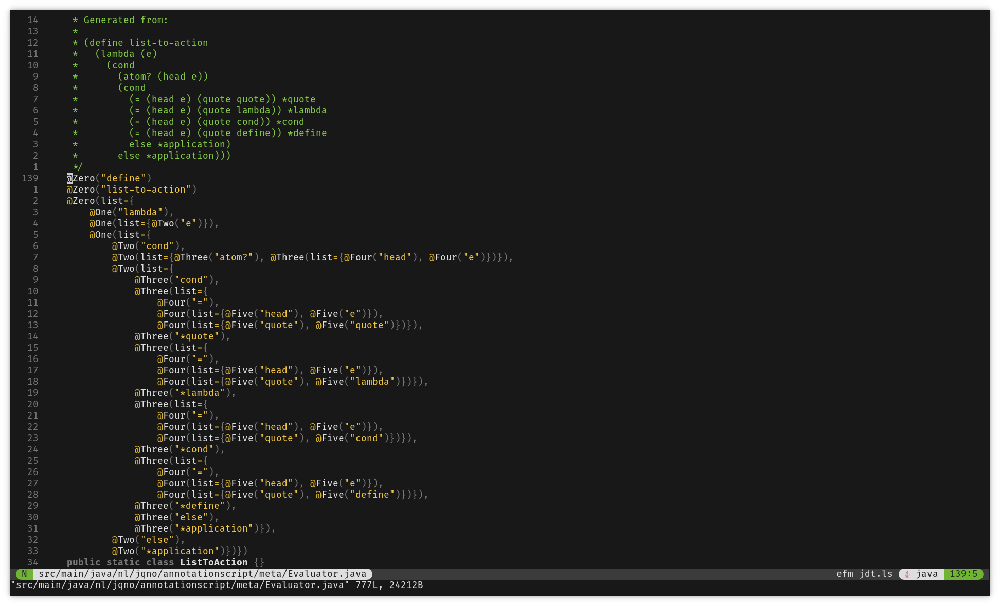
Recursion issue
(define (sum
(lambda (i)
(cond
((eq? i 0) 0)
(else
(+ i (sum (sub1 i)))))))
(sum 5))Recursion issue
(define (sum
(lambda (i)
(cond
((eq? i 0) 0)
(else
(+ i (sum (sub1 i)))))))
(sum 5))cond has no true branch
Recursion issue
(define (sum
(lambda (i)
(cond
((eq? i 0) 0)
(else
(+ i (sum (sub1 i)))))))
(sum 5))Invalid identifier: sum
Recursion issue
(define (sum
(lambda (i)
(cond
((eq? i 0) 0)
(else
(+ i (sum (sub1 i)))))))
(sum 5))Y Combinator ???
Recursion issue
(define (sum
(lambda (recurse i)
(cond
((eq? i 0) 0)
(else
(+ i (recurse recurse (sub1 i)))))))
(sum sum 5))Solution: function is parameter to itself
(recurse
Turing complete
I promised
But how to prove it?
Turing complete
- Can solve any computable problem
- Need loops, if, IO
- Mathematical proof is hard and boring
Turing machine
Turing machine
- Turing complete by definition
- Tape with cells
- Operations: read at head, write at head, move head
Turing machine
Implement one!
…
Brainfuck!
Demo time!
))
What’s next
Did it escalate?
Error handling
cond has no true branch
“[It] expects the programmer to be perfect”
String.split
"'Hello world'" → "'Hello" + "world'"Spring integration
ü§™
Conclusion
Conclusion
Learn about annotations
Conclusion
Learn about LISP
Conclusion
It was fun
Conclusion
Greenspun’s Tenth Rule:
Any sufficiently complicated C or Fortran program contains an ad hoc, informally-specified, bug-ridden, slow implementation of half of Common Lisp.
Questions?

 #bullshitlanguage
#bullshitlanguage
Fin
Image credits
| annotationscript | by moinart on Fiverr |
| architecture-1 | by Jan Ouwens |
| architecture-2 | by Jan Ouwens |
| background | by Jan Ouwens |
| bored | by DreamStudio (Stable Diffusion) with prompt “Nerd behind laptop looking bored. Many Salvador Dali melting clocks.” |
| climate-change | by DreamStudio (Stable Diffusion) with prompt “Laptop with image of a coal plant emitting thick black smoke. It’s on a table next to a pile of books and a coffee cup. In the background lush springtime forest” |
| code-generator | by DreamStudio (Stable Diffusion) with prompt “Monkey typing at a computer” |
| comics-0 | by Jan Ouwens - picture of “Asterix de Galliër” by René Goscinny & Albert Uderzo |
| comics-1 | by Jan Ouwens - picture of a stack of comic books with on top: “Asterix de Galliër” by René Goscinny & Albert Uderzo |
| comics-2 | by Jan Ouwens - picture of a stack of comic books with on top: “Gilles de Geus - De Spaanse furie” by Hanco Kolk |
| comics-3 | by Jan Ouwens |
| comics-4 | by Jan Ouwens - picture of two comic books: “Astérix Légionnaire” by René Goscinny & Albert Uderzo, and “Gilles de Geus - De revue” by Hanco Kolk & Peter de Wit |
| discoverability | Screenshot from IntelliJ IDEA, taken by Jan Ouwens |
| duke-says-no | by Jeff Dinkins for Sun/Oracle - source |
| duke-says-yes & duke-says-yes-background | by Jeff Dinkins for Sun/Oracle - source |
| environment-1 | by Jan Ouwens |
| environment-2 | by Jan Ouwens |
| escalation | by DreamStudio (Stable Diffusion) with prompt “A tsunami of snow coming from a mountain, a person running away from it, powdered snow in the air” |
| evaluator | by Jan Ouwens |
| fun | by dreamstudio (stable diffusion) with prompt “childrens drawing of stick fligure children playing in a school playground with a swing, a slide and a tree” |
| hackernews | Screenshot from Hacker News, taken by Jan Ouwens on 2023-09-11 |
| jan-ouwens | by Riemke Ouwens |
| lego-0 | by Jan Ouwens |
| lego-1 | by Jan Ouwens |
| lego-2 | by Jan Ouwens |
| lego-3 | by Jan Ouwens |
| lego-4 | Screenshot from my website, taken by Jan Ouwens on 2023-09-30 |
| lego-5 | Screenshot from Rebrickable, taken by Jan Ouwens on 2023-09-29 |
| lego-6 | by Jan Ouwens |
| lockdown | by DreamStudio (Stable Diffusion) with prompt “fat nerdy person at computer. man cave. messy room with parcels, stacks of books, empty pizza boxes, gadgets” |
| meta-evaluator & meta-parser & meta-tokenizer | by Jan Ouwens |
| mind-blown-1 | by DreamStudio (Stable Diffusion) with prompt “Person looking at a computer screen, very surprised, wide eyes, open mouth” |
| mind-blown-2 | by DreamStudio (Stable Diffusion) with prompt “Person looking at a computer screen, very surprised, wide eyes, open mouth” |
| nerd-cred | by DreamStudio (Stable Diffusion) with prompt “Rap music album cover in the style of Eminem, 50ct and notorious BIG. Photograph one face of fat, white, nerdy guy with large beard, messy hair, jewelry and colored glasses. Fish eye lens. Album title”nerd cred” appears next to face” |
| paralleljava-0 | by Jan Ouwens |
| paralleljava-1 | by Jan Ouwens |
| paralleljava-2 | Screenshot from GitHub taken by Jan Ouwens on 2023-09-29 |
| paralleljava-3 | Screenshot from Todo-Backend taken by Jan Ouwens |
| paralleljava-4 | by J-Fall - source |
| parser | by Jan Ouwens |
| rite-of-passage | by DreamStudio (Stable Diffusion) with prompt “Graduation ceremony. Fat nerdy man with glasses and unkempt beard on stage.” |
| stackoverflow | Screenshot from StackOverflow, taken by Jan Ouwens on 2023-09-11 |
| the-little-schemer | by MIT Press - source |
| tokenizer | by Jan Ouwens |
| turing-machine | by DreamStudio (Stable Diffusion) with prompt “A sewing machine sewing a long, straight, white ribbon that must not be bundled up” |
| vim | by Jan Ouwens |
{kind=link}
{kind=link}
{kind=link}
{kind=link}
{kind=link}
{kind=link}
{kind=link}
{kind=link}
{kind=link}
{kind=link}
{kind=link}
{kind=link}
{kind=link}
{kind=link}
{kind=link}
{kind=link}
{kind=link}
{kind=link}
{kind=link}
{kind=link}
{kind=link}
{kind=link}
{kind=link}
{kind=link}
{kind=link}
{kind=link}
{kind=link}
{kind=link}
{kind=link}
{kind=link}
{kind=link}
{kind=link}
{kind=link}
{kind=link}
{kind=link}
{kind=link}
{kind=link}
{kind=link}
{kind=link}
{kind=link}
{kind=link}
{kind=link}
{kind=link}
{kind=link}
{kind=link}
{kind=link}
{kind=link}
{kind=link}
{kind=link}
No animals were harmed during the making of this slide
deck.
Except bugs. Bugs were squashed without
hesitation.